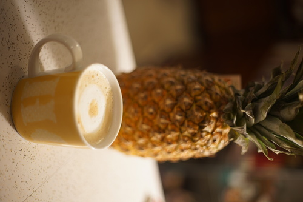
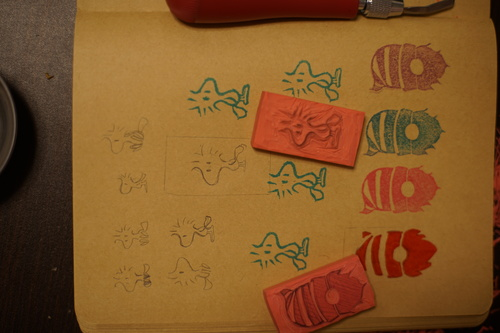
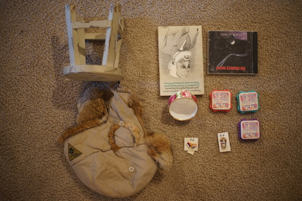

I have perfected latte art. Please check out my latest piece, "Pineapple Slice".
The Weird Al movie finally came out yesterday!! I stole my mom's Roku last month to prepare for it. She texted me yesterday morning asking me if the Roku worked and I forgot by the time I got out of bed until Ryan reminded me too late last night. I made sure we watched it tonight!! I enjoyed it! It was very much like Walk Hard, but the jokes weren't as perfected. There was one joke I highly disliked at the end but overall it was entertaining and I laughed a lot.
The stamping mood is here! And I made a lil woodstock! I wasn't sure how the linework would go but it went okay. My mom is a big stamp fan and has more than a lifetime's worth of card making supplies. I feel like I just beat her at her own game by MAKING stamps instead of just using them. She's trying to get me into glorified adult coloring too and that is not going well. I made a stupid gnome stamp to give to my her. I'm so tired of gnomes but she'll be happy to get it.
Through the fire and flames (or wind and hail), I made it to the thrift store.
I already have a sochi one but they repriced them to be much less so I wanted another.
For my mom.
rabbit fur so soft *________* will I get to see ryan in it? i hope so!
The back said "space music" and I was intrigued. What is space music? is it trance? I hoped so, but it's not. I would listen to it in space though so it doesn't disappoint. btw I just discovered who aphex twin is last week. life changing.
I have no idea who Turgenev is.
Hors says she found one too a while ago. Are these a hobby lobby special? I think I'll probably repaint it to be less shabby chic.